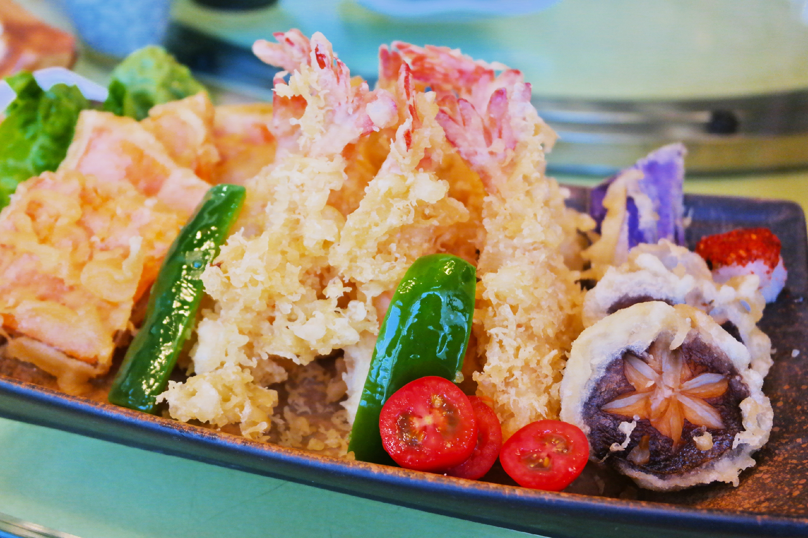

香遇巴厘印泰餐厅的菜系主要分为三大类：地道的东南亚菜、港式烧腊、日式料理！
咖喱皇炒蟹
咖喱皇炒蟹是香遇巴厘的王牌菜品，来店里的顾客
几乎桌桌必点。它的亮点在于其金黄可可口味的咖喱汁运用了三十多种原产地为东南亚的正宗香料，口味香醇，带有微微辣味却又有着椰奶的香甜。大伙最喜欢的吃法，就是再来一份泰国香米饭，将满满精华的咖喱汤浇入搅拌！而主菜也是挑选优质的蟹，大个的蟹腿，用钳子剪开就会看见里面白嫩嫩的蟹腿肉，吃起来也是蕴含了咖喱汁的美味。
冬阴功海鲜汤
东南亚菜擅于运用各种香料，其经典一是咖喱汁，二是沙嗲酱，三就是冬阴功汤了！
明炉青柠桂花鱼
有别于一些餐厅选用低价的鱼类，香遇巴厘印泰餐厅用的是优质且成本较高的桂花鱼（但是卖价也不贵哟）！搭配有酸甜可口的泰式辣椒、以及产自泰国的新鲜青柠檬片，在明炉的盛具中冒着热气，鱼肉慢慢地吸收着汤汁的味道，微酸微辣！
泰式冻腌生虾
这道菜品既有着日式刺身的感觉，又有着泰式的风味。新鲜的大虾进行开边处理，放在冰盘中既能杀菌又能保留着鲜美度，虾肉晶莹剔透，入口冰爽且Q感十足！而上面覆盖着一些酸甜的泰式辣椒，酸辣中又带有一些清甜。
印尼沙嗲肉串
最开始有说到厦门的沙茶面，其实沙嗲肉串也是厦门的流行小吃，在香遇巴厘也能品尝到哟！

马拉盏炒空心菜
泰式甜品拼盘

港式烧腊拼盘
日式刺身拼盘
日式炸天妇罗

 330445074@qq.com
330445074@qq.com 12345
12345